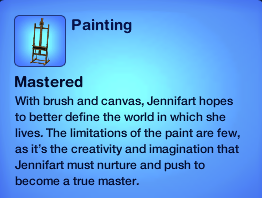

Biography
Jennifer Slay is a hard-working, fun-loving mother of one and a gorgeous, talented wife. She enjoys short walks on the beach and mopping up puddles. Her favorite color is pink and her favorite food is sushi. She is the silliest and craziest girl you'll ever meet.
Occupation
Jennifer works as a stylist in her town. She also happens to be the best stylist around, being at the highest level possible in her profession. (see photo below for proof)
Hobbies
During her free time, Jennifer loves to cook, create beautiful art, and yell at her husband (jk). She really does loving cooking and art though. She's actually mastered both of those skills! (see image below for photo evidence) (ignore her name in those pictures. must be some glitch.)
